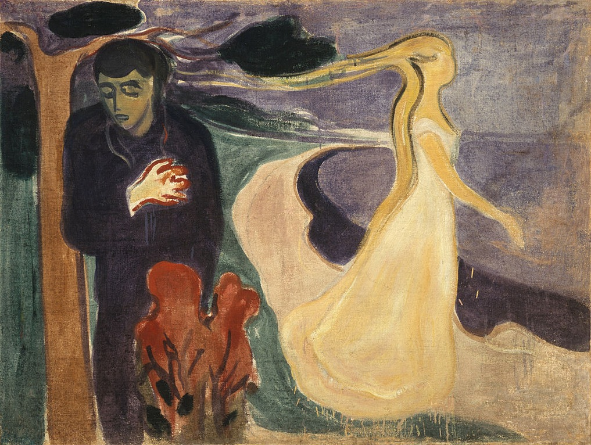

Wszystko to wciąż zostawiać za sobą
Duino, grudzień roku 1911. Rilke, pogrążony w samotności i zwątpieniu, skarży się w liście do najbardziej oddanej mu osoby, Lou Andreas-Salomé, która przyobiecała mu niegdyś dobre słowo w tej najstraszniejszej godzinie.
Droga Lou, źle ze mną, gdyż czekam na ludzi, potrzebuję ich, wyglądam ich… a przecież oni nie mogą wiedzieć, jak mało trudu sobie z nimi zadaję i do jakiej jestem zdolny bezwzględności.
Poeta nie wątpi, iż Lou zdoła odgadnąć, jak płonne były jego nadzieje. „Tęskniłem bez przerwy, pragnąłem znaleźć człowieka, któremu mógłbym powierzyć swą samotność, oddać mu ją pod ochronę”.
Rilke z niejakim zawstydzeniem przywołuje swój najlepszy paryski okres, z czasów „Nowych wierszy”, gdy nikogo nie wyczekiwał, „gdy cały świat stawał przede mną jak zadanie do wykonania, a ja z jasnym, pewnym umysłem odpowiadałem mu jedynie swoją twórczością”. Któż mógłby wówczas przepowiedzieć, że czekać go będzie jeszcze tyle prób — i rozczarowań?
Przeszywa go uczucie niepokoju na myśl, że całymi godzinami łudził się, iż dostrzeże swe zbawienie w „każdej przechodzącej kobiecie”, choć przecież „żadna z nich nie mogła mi dać szczęścia, mojego szczęścia najbardziej samotnych godzin”.
Wielekroć powraca myślą do słów własnego wiersza, zastanawiając się, skąd wówczas, pisząc go przed laty, wiedział, iż jego wyimaginowany poetycki nastrój któregoś dnia stanie się dlań… przekleństwem:
Wszystko to wciąż zostawiać za sobą i nie pożądać…
Fragmenty korespondencji Rilkego i Lou Andreas-Salomé w przekładzie W. Markowskiej.